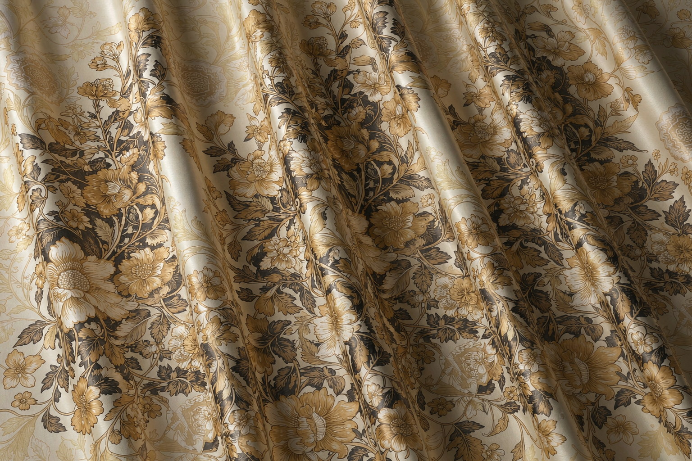
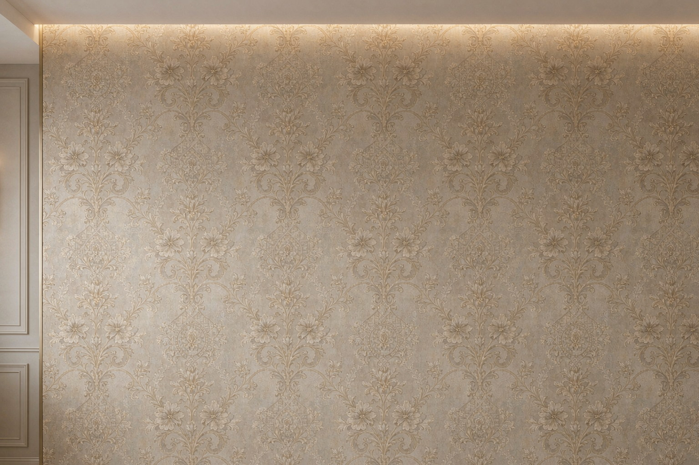
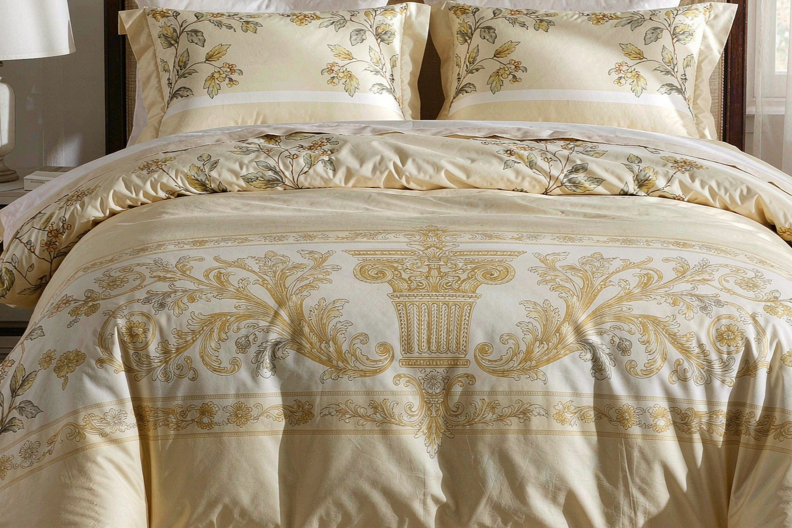

专注宽幅数码印花代工，覆盖家居软装全品类

窗帘数码印花支持200/220/240/260/280/320CM 六大幅宽数码印花，整幅一次成。分散印花（热转印）、涤纶印花工艺， 适合涤纶、化纤、混纺等各类窗帘面料。色彩丰富，图案精度高，无需制版， 1米起印、免费打样，小批量多花型皆可。

墙布数码印花专为宽幅墙布设计，幅宽覆盖200-320CM，一面整幅无缝。支持全棉、 无纺布、提花底布等多种基布，分散印花（热转印）、涤纶印花工艺，色彩鲜艳持久， 适合整体墙面装饰方案。1米起印、免费打样。

家纺数码印花床单印花、床品、抱枕、桌布等家纺品类数码印花代工。分散印花（热转印）、涤纶印花工艺， 色彩鲜艳持久，色牢度4级以上，符合Oeko-Tex环保标准。 支持纯棉、混纺、涤纶等各类面料，1米起印、免费打样。
专注宽幅印花加工，为B端客户提供稳定高效的代工服务
幅宽覆盖200/220/240/260/280/320CM 六大幅宽，业内少见的全幅宽超宽幅设备。窗帘、墙布一幅到底，严丝合缝，更美观。1米起印、免费打样。
8色墨水体系，1670万色彩表现。专业ICC色彩管理，来样色差ΔE＜1.5，色彩复原度业内领先。
1米起印、免费打样，无需制版，确认稿件后5-7天出货。急单可协商加急，满足快反需求。
月产能 60+ 万米，8+ 条进口高速产线 24 小时连续运转。千-万米级大单不排队，花型一致、米数准确、交期锁定，长期供货稳如老狗。
分散印花、涤纶印花、宽幅数码印花三大工艺并行。可加工涤纶、化纤、混纺、雪尼尔等全品类面料。
三道品检：印前稿件校对 → 印中在线检测 → 印后出厂检验。色牢度达4级以上，提供检测报告。
每个订单配专属对接人（张先生 17769886009），从打样到发货全程跟进，实时反馈进度。
匠领数码（J.LINK TEXTILE）坐落于绍兴柯桥中国轻纺城，是一家专注超宽幅数码印花加工与面料印花代工的源头工厂。依托柯桥完善的纺织产业链集群，我们为软装设计师、门店及品牌工厂提供从纹样打样到宽幅大货生产的一站式数码印花加工解决方案。
稳定承接 200–320CM 全幅宽订单，320CM 超宽幅可整幅一次印花、花纹连贯无切断，适配落地窗帘、宽幅墙布、整版床品等软装面料；床单印花、被套等家纺面料均可按需定制。
采用热转印及直喷印花工艺，针对涤纶、棉麻、雪尼尔等面料定向适配，花型还原度高、色牢度达标、水洗不易分层，让大货与打样"一个色"。
覆盖「纹样打样 → 面料适配 → 大货生产」全链路：小批量快出样、大货柔性排产不压单。作为柯桥数码印花加工厂，急单可排、翻单同色、交期可承诺。
专业色彩管理，花型还原行业领先；耐水洗、耐光照，适配中高端软装长期使用；宽幅对花精准，整卷严丝合缝。
每一个环节都有记录，让您放心下单
AI / PSD 格式，300dpi以上
专业师傅审稿调色
1-2工作日完成
签订合同，预付款
数码印花生产
热压固色 + 三道品检
物流跟踪到货
专注宽幅数码印花加工多年，沉淀了专业资质、稳定产能和客户口碑
中国轻纺城优质数码印花服务商 · 柯桥纺织行业协会会员 · 作为扎根中国轻纺城的柯桥数码印花加工厂，工厂通过 Oeko-Tex Standard 100 环保标准体系
业内少见的全幅宽加工设备，覆盖 200/220/240/260/280/320CM 六大标准幅宽，整幅一次成。8 色墨水，1670 万色，色彩精度 ΔE＜1.5
印前稿件校对 → 印中在线检测 → 印后出厂检验。色牢度 ≥ 4 级，可提供 SGS / 国家纺织检测中心报告
柯桥数码印花加工厂累计服务 500+ B 端客户，涵盖窗帘厂、墙布厂、家纺品牌、跨境电商。长期合作客户占比 60%+
还有疑问？直接联系张先生 17769886009
匠领数码1米起印，单花型不限数量。新客户小批量试单、单花型补货、补色补数都支持。首次合作免费打样1-2个花型，打样周期1-2个工作日，大货确认后打样费可抵扣货款。
我们加工幅宽覆盖200/220/240/260/280/320CM六大标准，最大 320CM。适合整幅窗帘（整幅一次成）、大幅墙布等需求。所有幅宽 1米起印、免费打样。
数码印花优势：无需制版（省500-2000元/色制版费）、1670万色彩、1米起印、免费打样、5-7天交货，适合小批量多花型、快反订单。
传统印花优势：大批量单价低，适合单一花型万米以上订单。
建议：测款/新品用数码印花，大货量产可综合评估。
• 分散印花：适用于涤纶、化纤面料，色彩饱和鲜艳、耐高温日晒，适合遮光布、化纤窗帘、墙布、装饰布。
• 涤纶印花：专为涤纶面料设计，色牢度好、手感柔软，适合涤纶家纺、化纤窗帘、抱枕、桌布。
• 宽幅数码印花：200-320CM 大幅面整幅加工，适合整幅窗帘、宽幅墙布，一幅到底整幅连贯。
如不确定工艺选择，告知面料成分，我们会专业推荐。
匠领数码采用进口墨水，经标准蒸化→水洗→定型后整理工序，成品色牢度≥4级（最高5级），满足家纺产品日常使用和洗涤要求。可提供色牢度检测报告。
首次合作支持免费打样（1-2个花型，1米起印），打样周期1-2个工作日完成，物流另计。大货确认后打样费可抵扣货款。打样样品建议客户寄来面料，确保最终大货效果一致。
标准大货订单5-7个工作日完成印花+后整理+品检。急单可协商加急排产（视当期产能）。发货后快递或物流到货另需1-5天（按目的地）。
欢迎预约来厂考察。工厂地址：浙江省绍兴市柯桥区齐贤镇兴浦路88号盛超针纺园区二幢南面五楼。来前提前联系张先生（17769886009）预约，方便安排专人接待和设备参观。
告诉我们您的需求，我们在1小时内（工作时间）回复您的询单。
工厂实拍、行业干货、面料趋势 · 每天自动更新